Если очень хочется понимать, чем живет мир стритвира и андеграундной моды, необязательно мониторить кучу пабликов и Telegram-каналов: достаточно один раз сгонять на FACES&LACES.
FACES&LACES — интерактивный выставочный проект, посвященный фэшну, субкультурам, кастомизации, спорту и отечественному альтернативному искусству. Мероприятие уже совсем на носу — оно пройдет в эти выходные — 8 и 9 июня. Одной из ключевых составляющих станет проект Faces&Laces Locals Review, направленный на поддержку локальной модной индустрии. Это — концептуальная галерея, которую будут курировать Юра Катовский и Даша Прибищук — участники творческого объединения «Русский Аттракцион».
Специально для проекта в пространстве автомобильной парковки «АВИАПАРКА» обустроят полноценное поп-ап пространство: залитые светом белые стены, описания брендов и работ в музейном стиле, сувенирный магазин и даже смотрительница.
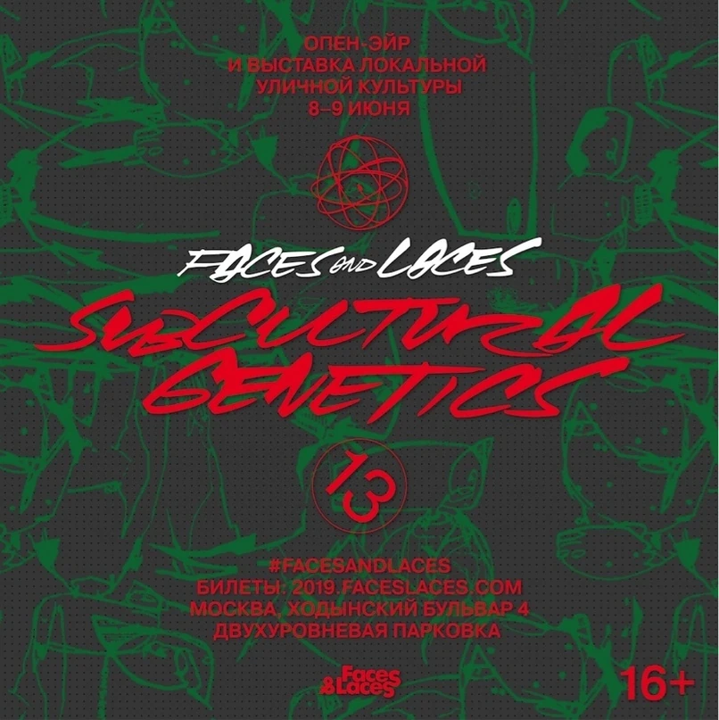
Организаторы выставки стараются превратить ее в альтернативу задолбавшим неделям моды: расширить кругозор посетителей и познакомить их с представителями сцены. И если уж вы решите наведаться на Faces&Laces Locals Review, вам точно стоит разобраться в тех брендах, которые «визуально и эмоционально представляют свою ДНК» в поп-ап галерее. Про уже зарекомендовавших себя гигантов, планирующих отметиться в проекте, мы распинаться не будем, а вот о перспективной «свежей крови» рассказать хотим. Раньше эти бренды на FACES&LACES не заглядывали, так что это полноценное знакомство с новичками, которым точно стоит дать шанс.
Итак, представляем: DOPECLVBWORLD, Kislen’ko racing, Abu Blunt, БОГЕМА, Liars Collective, Ceremony, Lumiér Garcon, MARDO, ÖMANKÖ и Mad Frenzy. Они стараются внести в стритстайл что-то свое, а на выставке смогут пообщаться с аудиторией: рассказать как о конкретных инсталляциях, так и о концепции бренда в целом.
DOPECLVBWORLD — в первую очередь музыканты, но по совместительству и лихие художники-дизайнеры. Коллектив, собравшийся в 2012-м в Уфе, выступал на сцене FACES&LACES в составе i61, basic boy и GLEBASTA SPAL. Но на грядущем мероприятии DOPECLVBWORLD представят себя именно как бренд одежды. У вас есть возможность оценить треки ребят, а потом глянуть на их шмотки и решить, что у них получается лучше.
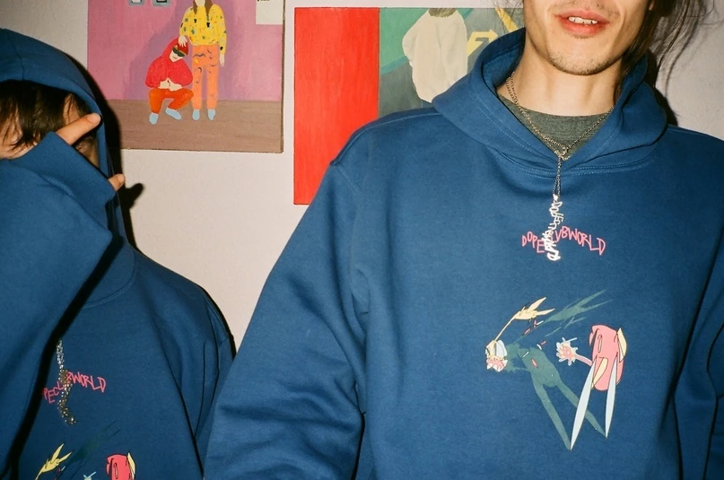
Kislen’ko Racing практикуют весьма креативный подход к одежде. Вдохновляясь гоночной тематикой, яркими принтами и динозаврами, создатели бренда мутят мерч для вымышленной команды автомобилистов, у которых есть своя форма и спонсоры — все чин по чину. Их футболки, свитшоты, куртки и худи всегда сохраняют дух бодрости и авантюризма.
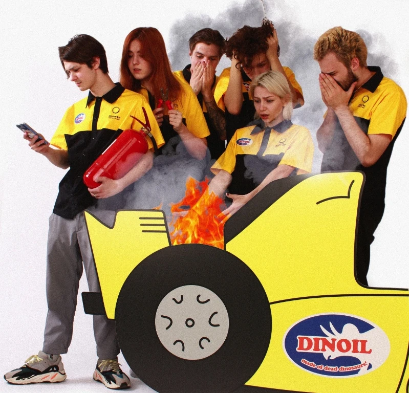
БОГЕМА — лихая команда из Санкт-Петербурга, легонько выстебывающая свежие релизы западных брендов. Очень многие вещи ребята делают вручную, ловко перешивая купленную в секонд-хендах одежду и ссылаясь не только на фэшн-индустрию, но и на массовую культуру в целом.
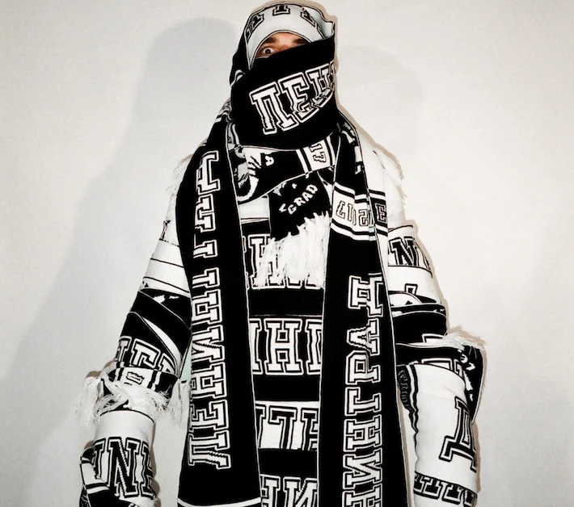
Liars Collective — снова питерские креативщики, угорающие по необычным принтам, диким цветам, глитчу, эффектам блюра и прочим крутым штукам. При этом на одежде чуваки не остановились: у них есть брендированные тарелки, зин с авторской графикой и лозунгами и, неожиданно, зубные щетки — чтобы даже привычные занятия были преисполнены фэшна.
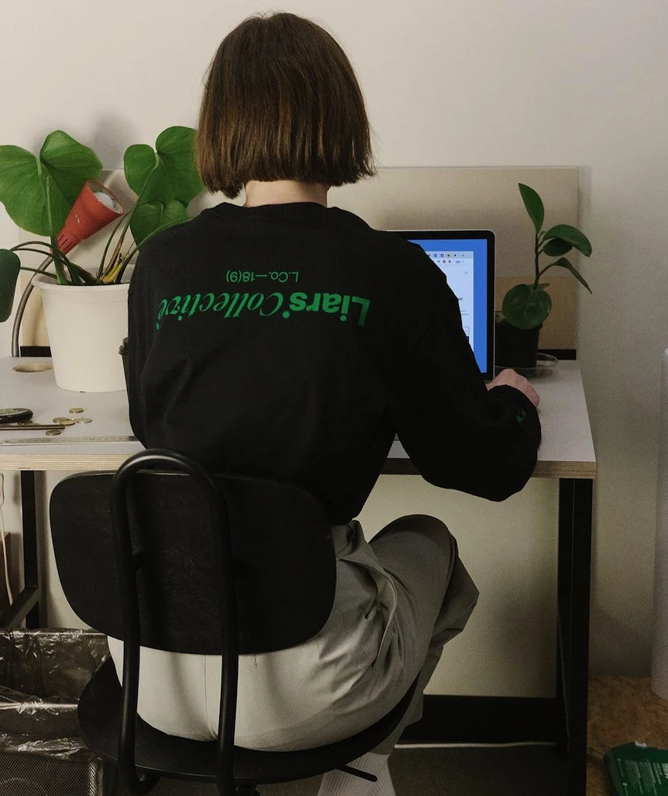
Abu Blunt — московский дизайнер, чей концепт — исследовать межкультурные феномены: например, он превращает традиционную мусульманскую одежду в высокотехнологичный стритвир, рассказывает истории африканских эмигрантов в России, разбирается в стереотипах, связанных с международным терроризмом. В общем, о серьезных вещах думает товарищ, за что ему можно только респектнуть.
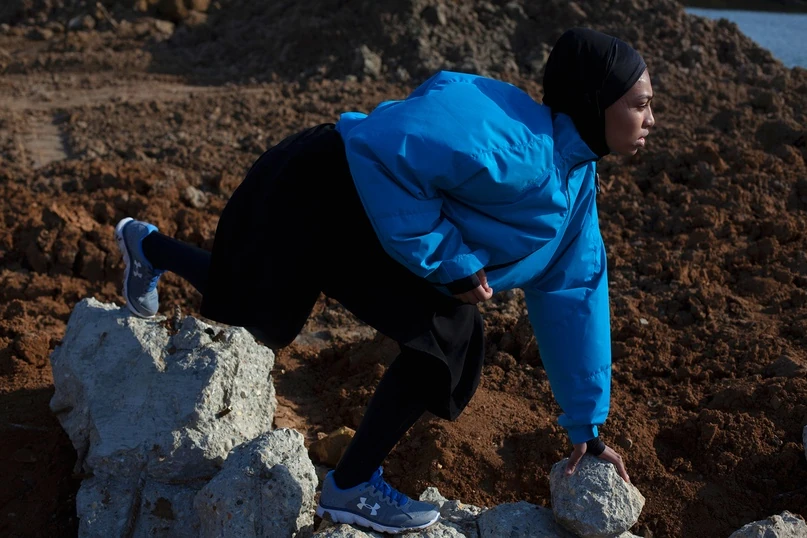
Это необычная коллаборация двух ребят из Японии и Белоруссии, которые стартовали с «пижамами не для сна и комбинезонами не для работы». Теперь Ceremony перешли на дерзкие вещи с анархистскими лозунгами и вырвиглазными шрифтами — спецом для тех, кто хочет показательно не прогибаться под изменчивый мир.
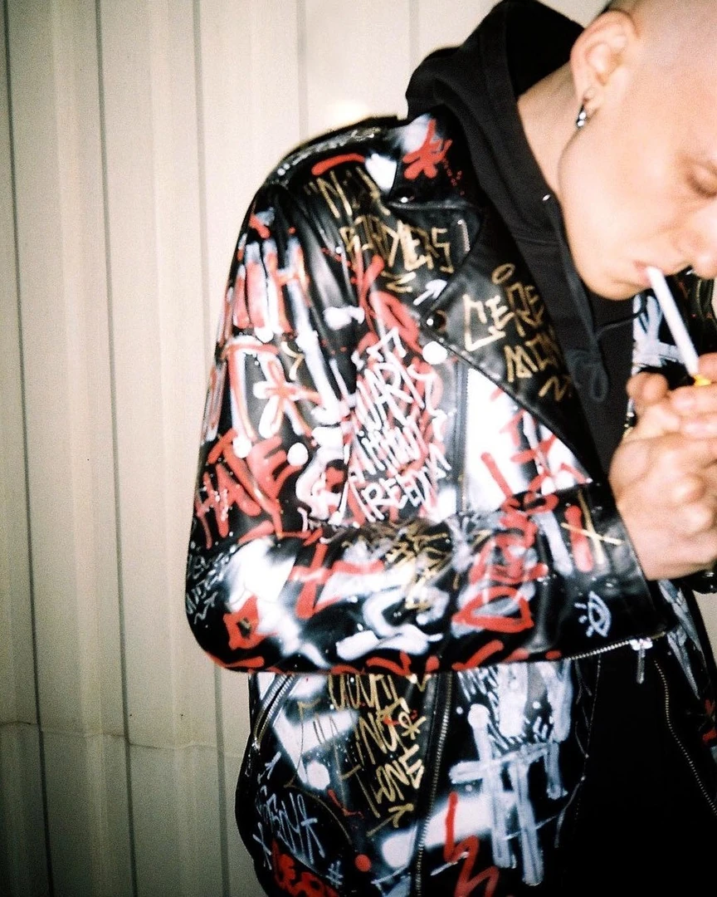
Основной рецепт успеха в данном случае — ловкое смешение парадоксальности, культурных отсылок и самоиронии. Старая добрая кислотность тоже на месте: последний дроп Lumiér Garcon был посвящен влиянию ЛСД на мировую культуру. Кстати, помимо одежды у Жана можно найти сумки и ювелирные украшения — чтобы было куда класть модные щетки от Liars Collective и с чем сравнивать блеск свежевычищенных зубов.
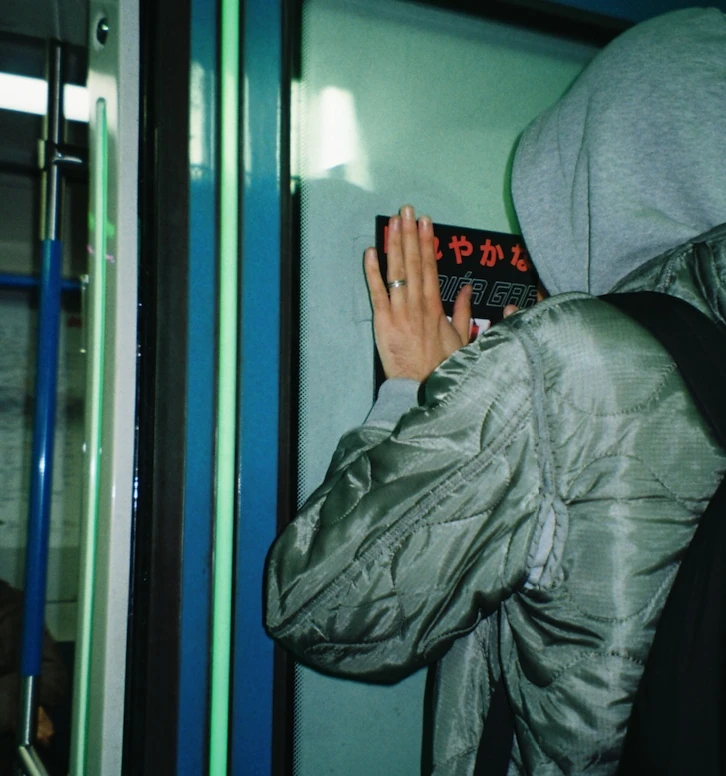
Стритвир-эстетика, дизайн и технологии — создатель бренда вдохновлялся отечественным нуаром, но на яркие цвета в одежде не скупится. Постоянные эксперименты со шрифтами, символикой, графикой, швами и патчами — глазу всегда есть за что зацепиться.
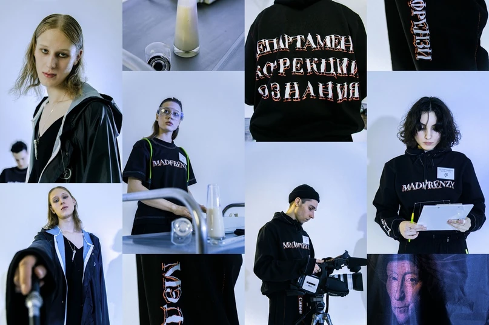
Вы, часом, не забыли про стиль милитари? В любом случае, тут подлетело его переосмысление: модель и дизайнер Андрей Мардо анализирует антивоенную живопись современных художников-пацифистов и обращается к актуальным мировым событиям. Уж насколько такой подход к моде вбивает что-то в умы молодежи, мы не знаем, но путь Андреем избран весьма достойный.
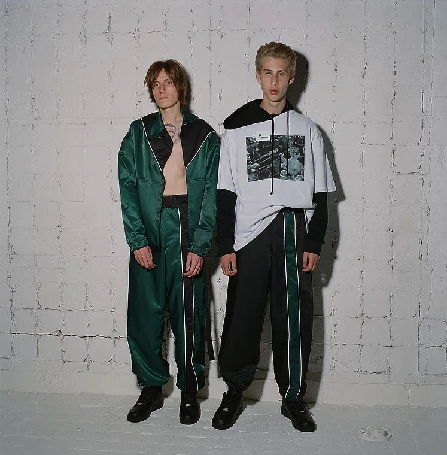
Ребята уже привыкли рассказывать обо всем самом важном и свежем из мира культуры и фэшна — создатель ÖMANKÖ Артем Ермилов еще в 2015-м основал паблик во «ВКонтакте», чуть позже превратившийся в мультиплатформенный блог со своим мерчем. ÖMANKÖ могут похвастаться сотрудничеством с Nike, IKEA, Аdidas и другими именитыми брендами, они в своем деле собаку съели и на выставке впечатлить вас просто обязаны.
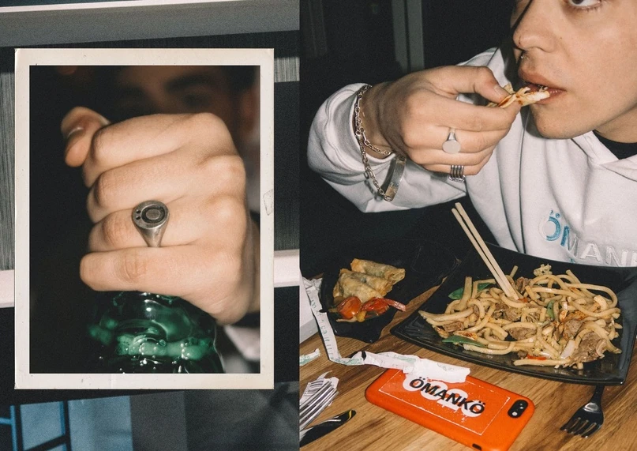